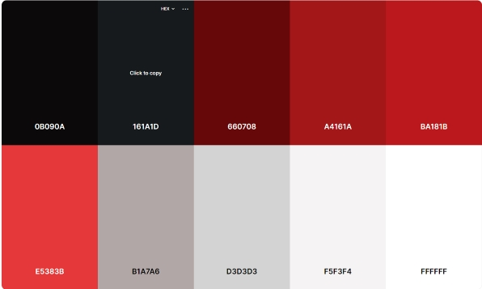
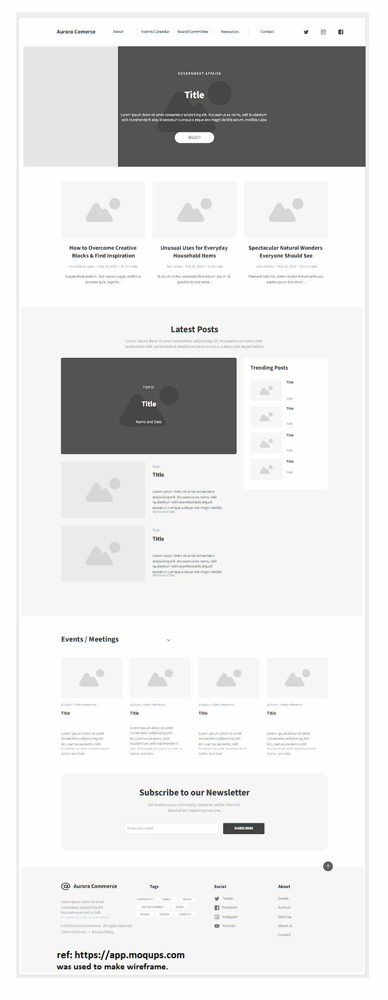
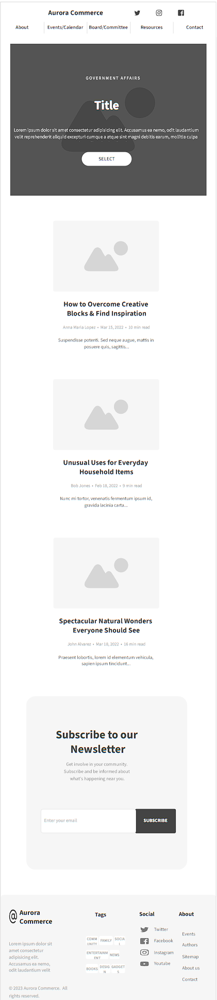

Site Name: Aurora Chamber of Commerce
Aurora Colorado is the city in which I grew up in and it would be helpful to have a chamber of commerce specifically geared or focused on helping minority groups.
Site Purpose
The main purpose or focus of this particular chamber of commerce would be to better inform and communicate ways in which people could progress by forming a community that will help small family owned businesses in the area. Another purpose would be to communicate important events such as voting days, or special events in the community.
Scenarios
Community events such as a small festival or fair can be used to help small businesses market their products or services. It can also help other business owners with similar interests meet each outher and offer each others services. Contact information could be in an about us page. Pupulation growth expected to be about 1.9 percent in the area. Someone new to the site could inform said person about ways to improve themselves and the community. 3 target audiences are anyone who pays taxes and would like to know where their funds are being spent. Voters who would like to induct someone who is more in line with their interests, and parents of children who would like to keep a safe community.
Color Schema
This is the color scheme intended for the site. The main color will be a white background with red and gray boxes as contrast colors with both white and black text. Color Schema 
Typography
This is an example of the font to be used for HEADINGS.
This is an example of the font to be used for the paragraphs.
Wireframe
This is the wireframe for the propesed Chamber of Commerce site full web view. 
This is the wireframe for the proposed Chamber of Commerce site mobile view. 